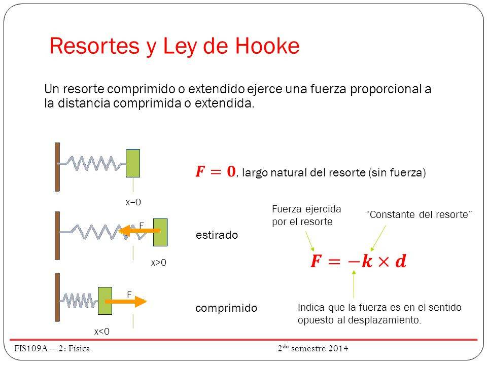

La Ley de Hooke es uno de los principios fundamentales de la física, ya que describe cómo se comportan los materiales elásticos cuando se les aplica una fuerza.
La ley establece que: “La deformación que sufre un cuerpo elástico es directamente proporcional a la fuerza que se le aplica”. Matemáticamente, se expresa como:
F = -k · x
El signo negativo indica que la fuerza que ejerce el resorte se opone a la deformación: si lo estiramos, el resorte quiere volver a su posición original.
La Ley de Hooke tiene múltiples aplicaciones en la vida real:
La Ley de Hooke solo se cumple dentro del límite elástico de un material. Si la fuerza aplicada es demasiado grande, el cuerpo puede deformarse de manera permanente o incluso romperse.
